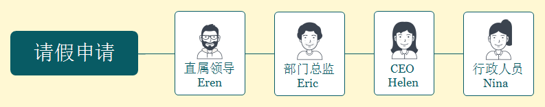

- 00 生活中的设计模式：启程之前，请不要错过我.md.html
- 01 监听模式：坑爹的热水器.md.html
- 02 适配模式：身高不够鞋来凑.md.html
- 03 状态模式：人与水的三态.md.html
- 04 单例模式：你是我生命的唯一.md.html
- 05 职责模式：我的假条去哪了.md.html
- 06 中介模式：找房子问中介.md.html
- 07 代理模式：帮我拿一下快递.md.html
- 08 装饰模式：你想怎么穿就怎么穿.md.html
- 09 工厂模式：你要拿铁还是摩卡.md.html
- 10 迭代模式：下一个就是你了.md.html
- 11 组合模式：自己组装电脑.md.html
- 12 构建模式：想要车还是庄园.md.html
- 13 克隆模式：给你一个分身术.md.html
- 14 策略模式：怎么来不重要，人到就行.md.html
- 15 命令模式：大闸蟹，走起！.md.html
- 16 备忘模式：好记性不如烂笔头.md.html
- 17 享元模式：颜料很贵必须充分利用.md.html
- 18 外观模式：学妹别慌，学长帮你.md.html
- 19 访问模式：一千个读者一千个哈姆雷特.md.html
- 20 生活中的设计模式：与经典设计模式的不解渊源.md.html
- 21 生活中的设计模式：那些未完待续的设计模式.md.html
- 22 深入解读过滤器模式：制作一杯鲜纯细腻的豆浆.md.html
- 23 深入解读对象池技术：共享让生活更便捷.md.html
- 24 深入解读回调机制：把你技能亮出来.md.html
- 25 谈谈我对设计模式的理解.md.html
- 26 谈谈我对设计原则的思考.md.html
- 27 谈谈我对项目重构的看法.md.html
- 捐赠
05 职责模式：我的假条去哪了
【故事剧情】
周五了，Tony 因为家里有一些重要的事需要回家一趟，于是向他的领导 Eren 请假，填写完假条便交给了 Eren。得到的回答却是：“这个假条我签不了，你得等部门总监同意！” Tony 一脸疑惑：“上次去参加 SDCC 开发者大会请了一天假不就是您签的吗？” Eren：“上次你只请了一天，我可以直接签。现在你是请五天，我要提交给部门总监，等他同意才可以。”
Tony：“您怎么不早说啊？” Eren：“你也没问啊！下次请假要提前一点……”
Tony 哪管这些啊！对他来说，每次请假只要把假条交给 Eren，其他的事情都交给领导去处理吧！
事实却是，整个请假的过程要走一套复杂的流程：
- 小于等于2天，直属领导签字，提交行政部门；
- 大于2天，小于等于5天，直属领导签字，部门总监签字，提交行政部门；
- 大于5天，小于等于1月，直属领导签字，部门总监签字，CEO 签字，提交行政部门。

用程序来模拟生活
对于 Tony 来说，他只需要每次把假条交给直属领导，其他的繁琐流程他都可以不用管，所以他并不知道请假流程的具体细节。但请假会影响项目的进展和产品的交互，所以请假其实是一种责任担当的过程：你请假了，必然会给团队或部门增加工作压力，所以领导肯定会控制风险。请假的时间越长，风险越大，领导的压力和责任也越大，责任人也就越多，责任人的链条也就越长。
程序来源于生活，我们可以用程序来模拟这一个有趣的场景。
源码示例：
class Person:
"请假申请人"
def __init__(self, name, dayoff, reason):
self.__name = name
self.__dayoff = dayoff
self.__reason = reason
self.__leader = None
def getName(self):
return self.__name
def getDayOff(self):
return self.__dayoff
def getReason(self):
return self.__reason
def setLeader(self, leader):
self.__leader = leader
def reuqest(self):
print(self.__name, "申请请假", self.__dayoff, "天。请假事由：", self.__reason)
if( self.__leader is not None):
self.__leader.handleRequest(self)
class Manager:
"公司管理人员"
def __init__(self, name, title):
self.__name = name
self.__title = title
self.__nextHandler = None
def getName(self):
return self.__name
def getTitle(self):
return self.__title
def setNextHandler(self, nextHandler):
self.__nextHandler = nextHandler
def getNextHandler(self):
return self.__nextHandler
def handleRequest(self, person):
pass
class Supervisor(Manager):
"主管"
def __init__(self, name, title):
super().__init__(name, title)
def handleRequest(self, person):
if(person.getDayOff() <= 2):
print("同意", person.getName(), "请假，签字人：", self.getName(), "(", self.getTitle(), ")")
nextHander = self.getNextHandler()
if(nextHander is not None):
nextHander.handleRequest(person)
class DepartmentManager(Manager):
"部门总监"
def __init__(self, name, title):
super().__init__(name, title)
def handleRequest(self, person):
if(person.getDayOff() >2 and person.getDayOff() <= 5):
print("同意", person.getName(), "请假，签字人：", self.getName(), "(", self.getTitle(), ")")
nextHander = self.getNextHandler()
if(nextHander is not None):
nextHander.handleRequest(person)
class CEO(Manager):
"CEO"
def __init__(self, name, title):
super().__init__(name, title)
def handleRequest(self, person):
if (person.getDayOff() > 5 and person.getDayOff() <= 22):
print("同意", person.getName(), "请假，签字人：", self.getName(), "(", self.getTitle(), ")")
nextHander = self.getNextHandler()
if (nextHander is not None):
nextHander.handleRequest(person)
class Administrator(Manager):
"行政人员"
def __init__(self, name, title):
super().__init__(name, title)
def handleRequest(self, person):
print(person.getName(), "的请假申请已审核，情况属实！已备案处理。处理人：", self.getName(), "(", self.getTitle(), ")\n")
nextHander = self.getNextHandler()
测试代码：
def testChainOfResponsibility():
directLeader = Supervisor("Eren", "客户端研发部经理")
departmentLeader = DepartmentManager("Eric", "技术研发中心总监")
ceo = CEO("Helen", "创新文化公司CEO")
administrator = Administrator("Nina", "行政中心总监")
directLeader.setNextHandler(departmentLeader)
departmentLeader.setNextHandler(ceo)
ceo.setNextHandler(administrator)
sunny = Person("Sunny", 1, "参加MDCC大会。")
sunny.setLeader(directLeader)
sunny.reuqest()
tony = Person("Tony", 5, "家里有紧急事情！")
tony.setLeader(directLeader)
tony.reuqest()
pony = Person("Pony", 15, "出国深造。")
pony.setLeader(directLeader)
pony.reuqest()
输出结果：
Sunny 申请请假 1 天。请假事由： 参加MDCC大会。
同意 Sunny 请假，签字人： Eren ( 客户端研发部经理 )
Sunny 的请假申请已审核，情况属实！已备案处理。处理人： Nina ( 行政中心总监 )
Tony 申请请假 5 天。请假事由： 家里有紧急事情！
同意 Tony 请假，签字人： Eric ( 技术研发中心总监 )
Tony 的请假申请已审核，情况属实！已备案处理。处理人： Nina ( 行政中心总监 )
Pony 申请请假 15 天。请假事由： 出国深造。
同意 Pony 请假，签字人： Helen ( 创新文化公司CEO )
Pony 的请假申请已审核，情况属实！已备案处理。处理人： Nina ( 行政中心总监 )
从剧情中思考职责模式
从请假这个示例中我们发现，对于 Tony 来说，他并不需要知道假条处理的具体细节，甚至不需要知道假条去哪儿了，他只需要知道假条有人会处理。而假条的处理流程是一手接一手的责任传递，处理假条的所有人构成了一条责任的链条。链条上的每一个人只处理自己职责范围内的请求，对于自己处理不了请求，直接交给下一个责任人。这就是程序设计中职责模式的核心思想。

职责模式： 避免请求发送者与接收者耦合在一起，让多个对象都有可能接收请求，将这些对象连接成一条链，并且沿着这条链传递请求，直到有对象处理它为止。职责模式也称为责任链模式，它是一种对象行为型模式。
职责链模式将请求的发送者和接受者解耦了。客户端不需要知道请求处理者的明确信息和处理的具体逻辑，甚至不需要知道链的结构，它只需要将请求进行发送即可。
在职责链模式中我们可以随时随地的增加或者更改一个责任人，甚至可以更改责任人的顺序，增加了系统的灵活性。但是有时候可能会导致一个请求无论如何也得不到处理，它会被放置在链末端。
职责模式的模型抽象
代码框架
上面的示例代码还是相对比较粗糙，我们可以对它进行进一步的重构和优化，抽象出职责模式的框架模型。
class Request:
"请求(内容)"
def __init__(self, name, dayoff, reason):
self.__name = name
self.__dayoff = dayoff
self.__reason = reason
self.__leader = None
def getName(self):
return self.__name
def getDayOff(self):
return self.__dayoff
def getReason(self):
return self.__reason
class Responsible:
"责任人的抽象类"
def __init__(self, name, title):
self.__name = name
self.__title = title
self.__nextHandler = None
def getName(self):
return self.__name
def getTitle(self):
return self.__title
def setNextHandler(self, nextHandler):
self.__nextHandler = nextHandler
def getNextHandler(self):
return self.__nextHandler
def handleRequest(self, request):
pass
类图
上面的代码框架可用类图表示如下：
基于框架的实现
有了上面的代码框架之后，我们要实现示例代码的功能就会更简单了，代码也会更加优雅。最开始的示例代码我们假设它为 version 1.0，那么再看看基于框架的 version 2.0 吧。
class Person:
"请求者"
def __init__(self, name):
self.__name = name
self.__leader = None
def setName(self, name):
self.__name = name
def getName(self):
return self.__name
def setLeader(self, leader):
self.__leader = leader
def getLeader(self):
return self.__leader
def sendReuqest(self, request):
print(self.__name, "申请请假", request.getDayOff(), "天。请假事由：", request.getReason())
if (self.__leader is not None):
self.__leader.handleRequest(request)
class Supervisor(Responsible):
"主管"
def __init__(self, name, title):
super().__init__(name, title)
def handleRequest(self, request):
if (request.getDayOff() <= 2):
print("同意", request.getName(), "请假，签字人：", self.getName(), "(", self.getTitle(), ")")
nextHander = self.getNextHandler()
if (nextHander is not None):
nextHander.handleRequest(request)
class DepartmentManager(Responsible):
"部门总监"
def __init__(self, name, title):
super().__init__(name, title)
def handleRequest(self, request):
if (request.getDayOff() > 2 and request.getDayOff() <= 5):
print("同意", request.getName(), "请假，签字人：", self.getName(), "(", self.getTitle(), ")")
nextHander = self.getNextHandler()
if (nextHander is not None):
nextHander.handleRequest(request)
class CEO(Responsible):
"CEO"
def __init__(self, name, title):
super().__init__(name, title)
def handleRequest(self, request):
if (request.getDayOff() > 5 and request.getDayOff() <= 22):
print("同意", request.getName(), "请假，签字人：", self.getName(), "(", self.getTitle(), ")")
nextHander = self.getNextHandler()
if (nextHander is not None):
nextHander.handleRequest(request)
class Administrator(Responsible):
"行政人员"
def __init__(self, name, title):
super().__init__(name, title)
def handleRequest(self, request):
print(request.getName(), "的请假申请已审核，情况属实！已备案处理。处理人：", self.getName(), "(", self.getTitle(), ")\n")
nextHander = self.getNextHandler()
测试代码需要稍微修改一下：
def testChainOfResponsibility1():
directLeader = Supervisor("Eren", "客户端研发部经理")
departmentLeader = DepartmentManager("Eric", "技术研发中心总监")
ceo = CEO("Helen", "创新文化公司CEO")
administrator = Administrator("Nina", "行政中心总监")
directLeader.setNextHandler(departmentLeader)
departmentLeader.setNextHandler(ceo)
ceo.setNextHandler(administrator)
sunny = Person("Sunny")
sunny.setLeader(directLeader)
sunny.sendReuqest(Request(sunny.getName(), 1, "参加MDCC大会。"))
tony = Person("Tony")
tony.setLeader(directLeader)
tony.sendReuqest(Request(tony.getName(), 5, "家里有紧急事情！"))
pony = Person("Pony")
pony.setLeader(directLeader)
pony.sendReuqest(Request(pony.getName(), 15, "出国深造。"))
自己跑一下，会发现输出结果和之前的是一样的。
模型说明
- 设计要点
在设计职责模式的程序时要注意以下几点：
- 请求者与请求内容：谁要发送请求？发送请求的对象称为请求者。请求的内容通过发送请求时的参数进行传递。
- 有哪些责任人：责任人是构成责任链的关键要素。请求的流动方向是链条中的线，而责任人则是链条上的结点，线和结点才构成了一条链条。
- 对责任人进行抽象：真实世界中的责任人会多种多样，纷繁复杂，会有不同的职责和功能；但他们也有一个共同的特征——都可以处理请求。所以需要对责任人进行抽象，使他们具有责任的可传递性。
- 责任人可自由组合：责任链上的责任人可以根据业务的具体逻辑进行自由的组合和排序。
优缺点
- 优点：
- 降低耦合度。它将请求的发送者和接受者解耦。
- 简化了对象。使得对象不需要知道链的结构。
- 增强给对象指派职责的灵活性。通过改变链内的成员或者调动它们的次序，允许动态地新增或者删除责任人。
- 增加新的处理类很方便。
- 职责模式的缺点：
- 不能保证请求一定被接收。
- 系统性能将受到一定影响，而且在进行代码调试时不太方便，可能会造成循环调用。
应用场景
- 有多个对象可以处理同一个请求，具体哪个对象处理该请求由运行时刻自动确定。
- 请求的处理具有明显的一层层传递关系。
- 请求的处理流程和顺序需要程序运行时动态确定。
© 2019 - 2023 Liangliang Lee. Powered by gin and hexo-theme-book.